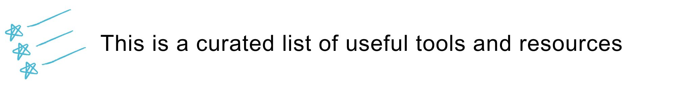

The Programming Historian: This is a wonderful resource for those who have a non-technical background, like people with a humanities degree, for example. The Programming Historian offers tutorials to learn a lot of tools and techniques, from text mining with Python to web mapping with Leaflet.
Introduction to Cultural Analytics with Python: This is an online book written by Melanie Walsh (Cornell University) for a Digital Humanities course. It’s great if you have zero experience in programming and want to experiment the kind of things you can do with basic Python.
Natural Language Processing with Python: This book is a classic and a must if you’re into NLP. The book teaches you how to use Python for text analytics with the nltk library. If you don’t like the online version, you can always purchase the physical book.
W3Schools: W3Schools is the largest site for web developers. It hosts tutorials for several programming languages and offers nice interactive examples.
Software Carpentry: Software Carpentry is a non-profit that offers computing workshops led by volunteers. Several institutions host these workshops, which are practical in nature. For example, it’s common to find Software Carpentry workshops being offered at many universities across the United States and Europe. You can check out their website to see when and where the next workshops are taking place.
Tapor: Tapor is a visual database of digital tools that you can use to study texts. You just click on a random tool (or use filters to look for something more specific) and start using it. It’s a great site to discover new tools to work on your data.
Statistical Methods for Linguistics and Psychology: This yearly summer school is organized by Shravan Vasishth (University of Postdam). The summer school provides training to students and researchers in theoretical and applied statistics. Great opportunity to learn stats!
Atom: Atom is an open-source text and source-code editor developed by GitHub. It’s highly customizable, as you can install packages to enjoy new features.
Visual Studio Code: Another source-code editor developed by Microsoft. You can install extensions to add more functionalities.
Jupyter Notebooks: A Jupyer Notebook is a web application that you can use to write and share code, visualizations and narrative text. Great tool if you want to write code online!
Google Colab: Pretty much the same as Jupyter Notebooks. In fact, Google Colab is based on Jupyter Notebooks. The good thing is that your Google Colab notebooks are stored on your Google Drive account, so they’re great if you want to share your code with other people.
Zoho Writer: Amazing online word processor! It offers several templates as well as the option to collaborate with other people on a document.
Hemingway Editor: Hemingway Editor is a tool that allows you to improve as a writer. It highlights and corrects your grammar, sentence structure, fluency, and the like. It also offers you tips to improve the readability of your text.
Tufte Handout: This is actually an R package, and not really an online tool. It allows you to create handouts in the style of Edward Tufte (Yale University), an expert in the visualization of quantitative data.
Overleaf: Overleaf is an online LaTeX editor. It also allows you to collaborate with other people, just like you would do with Google docs, for example.
Fundamentals of Data Visualization: Online book by Claus O. Wilke to learn the basics of data vizualization and figure design.
Plotly: One of my favorite graphing tools! It allows you to create simple but beautiful graphs. Oh, and they’re also interactive. It can be used with Python, R, or JavaScript.
Shiny: This is another R package with which you can create Shiny apps. You can think of Shiny apps as interactive online dashboards. If you also know CSS, HTML, and JavaScript, you can customize your Shiny app further. When you’re done creating your Shiny app, R allows you to deploy your app on their hosting service.
Genially: With Genially, you can create awesome interactive presentations, as well as infographics, guides, dossiers, and many more things.
Remark.js: Remark.js allows you to create an online slideshow using Markdown, and basic HTML and CSS. The final presentation is an HTML file, which you can also present offline.
Reveal.js: Another HTML presentation framework. Presentations are highly customizable, though if you don’t know programming, you can always use their visual editor Slides.com. There’s also an R package that you can use to create a Reveal.js presentation without having to use HTML, CSS, or JavaScript (I even wrote a blog post about it!).